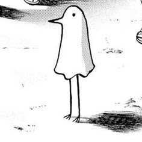
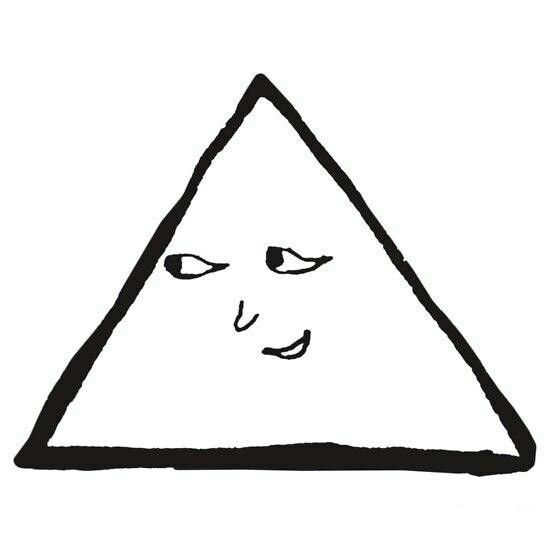

Punpun pequeño
En esta etapa de su vida, Punpun es solo un niño con una familia complicada. Su padre fue encarcelado por agredir a su madre, marcando el inicio de una infancia difícil y llena de inseguridades.

Punpun triángulo
Esta forma simboliza el bloqueo emocional que Punpun desarrolla tras vivir numerosas experiencias traumáticas, como el abuso sufrido, que afectan profundamente a su forma de ver el mundo.
